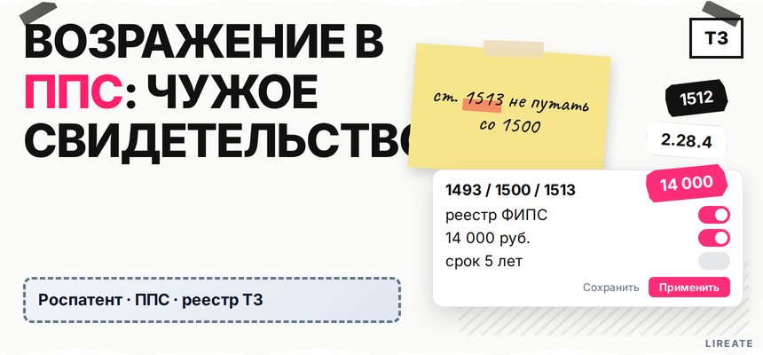
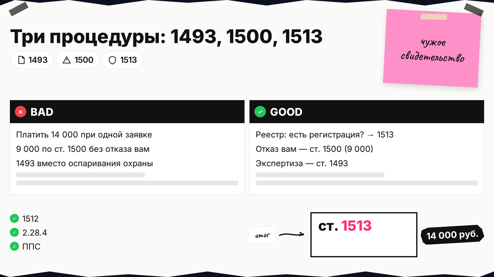
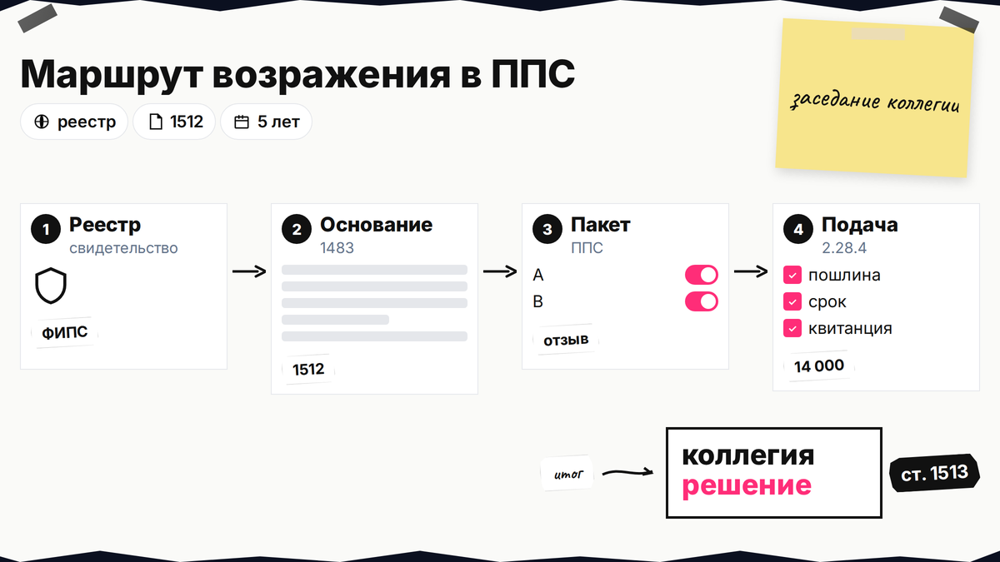
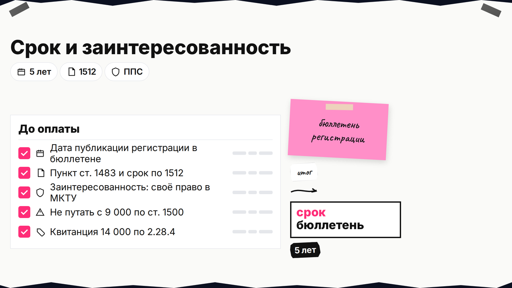

У конкурента уже есть свидетельство на похожий знак, а в поиске все смешали "возражение в Роспатент" в одну кучу. Если в реестре есть регистрация, а не только заявка, вам нужно не возражение заявителя по ст. 1500 и не обращение по ст. 1493, а возражение против предоставления правовой охраны в ППС (ст. 1512-1513). Дальше вы отличите три процедуры, проверите срок, соберёте доказательства и подадите документ с пошлиной 2.28.4.

TL;DR / Быстрый инсайт: ППС - специализированный коллегиальный орган внутри Роспатента, который рассматривает споры о патентах и товарных знаках в административном порядке. Против уже зарегистрированного чужого знака подают возражение против предоставления правовой охраны по ст. 1513 на основаниях ст. 1512 (подп. 3.2.10 Правил ППС 644/261). Пошлина - 14 000 руб. (п. 2.28.4). Типичный спор о сходстве (п. 6 ст. 1483) - 5 лет с публикации регистрации в бюллетене. Это не возражение заявителя по ст. 1500 (9 000 руб., 4 месяца).
ППС - коллегии при Роспатенте; "подать в ППС" значит возражение по гл. II Правил 644/261. Карта оспаривания - в обзоре процедур; если конкурент ещё на экспертизе - ст. 1493 и две стадии. Материал на 12.11.2026 не заменяет консультацию поверенного.

В выдаче смешивают обращение на чужую заявку, ответ заявителя на отказ по своей заявке и оспаривание чужого свидетельства. Ошибка в выборе документа - потерянные сроки и лишняя пошлина.
Делайте: сначала смотреть статус в реестре. Не делайте: платить 14 000 руб. по п. 2.28.4, если спорный объект ещё только заявка без регистрации.
| Процедура | Кто подаёт | Объект | Норма | Срок | Пошлина 2.28 |
|---|---|---|---|---|---|
| Обращение третьего лица | Любое лицо | Чужая заявка до решения о регистрации | ст. 1493 | До регистрации | Отдельной 2.28.4 нет |
| Возражение заявителя | Заявитель своей заявки | Отказ или решение по своей заявке | ст. 1500 | 4 месяца | 9 000 руб. (п. 2.28.2), см. гайд по отказу и ст. 1500 |
| Возражение в ППС на правовую охрану | Заинтересованное лицо | Свидетельство на чужой знак | ст. 1513, основания ст. 1512 | 5 лет или весь срок охраны (см. ниже) | 14 000 руб. (п. 2.28.4) |
Короткая схема: реестр → есть свидетельство? → нет: ст. 1493 (L08) → да: ст. 1512-1513 + 14 000 руб. → формальная проверка → заседание коллегии → отзыв за 10 раб. дней → решение → при необходимости суд

Откройте объект в Поисковой платформе Роспатента (круглосуточно с 11.12.2023) или в открытых реестрах ФИПС. Нужны номер свидетельства, статус "действует", дата публикации регистрации в официальном бюллетене и классы МКТУ (группы товаров и услуг). Алгоритм сравнения со своим обозначением - в чек-листе проверки перед подачей.
Делайте: сохранить скрин или выписку с датой бюллетеня для расчёта пятилетнего срока. Не делайте: путать дату подачи заявки конкурента с датой публикации регистрации - отсчёт по ст. 1512 идёт от второй.

Возражение ссылается на конкретный пункт ст. 1483. Без явной привязки коллегия не поймёт, какой срок вам доступен.
| Основание (ст. 1483) | Смысл для бизнеса | Срок возражения (ст. 1512 п. 2) |
|---|---|---|
| П. 6, 7, 10 | Сходство знаков, НМПТ, п. 10 | 5 лет с публикации сведений о гос. регистрации в бюллетене |
| П. 1-5, 8, 9 | "Абсолютные" и иные основания | В течение всего срока исключительного права на оспариваемый знак |
По абз. 2 п. 2 ст. 1512 сроки считают с учётом обстоятельств на дату подачи возражения, а не на дату конфликта в маркетплейсе.
Делайте: для типичного спора о сходстве сразу посчитать крайнюю дату пяти лет. Не делайте: откладывать подачу на последний месяц пятилетки - сравнительный анализ и сбор однородности товаров занимают недели.
По п. 2 ст. 1513 возражение подают заинтересованные лица: владелец более раннего товарного знака, заявитель на сходное обозначение, обладатель фирменного наименования в спорных классах МКТУ и иные, указанные в законе. "Мне не нравится чужой логотип" без своего конфликтующего права - слабая позиция.
Для п. 6 ст. 1483 нужны сходство обозначений и однородность товаров. Сравните звук, смысл, графику; составьте таблицу пересечения классов МКТУ; приложите копию своего свидетельства или заявки, договоры, прайсы, фото использования.
Делайте: в тексте возражения первым абзацем описать свое право и конфликт в конкретных классах. Не делайте: подавать без таблицы однородности - коллегия оценивает товарные группы, а не только "похожие картинки".
Документ оформляют по гл. II Правил 644/261 (подп. 3.2.10). Минимальный состав: реквизиты заявителя, номер оспариваемого свидетельства, ссылка на пункт ст. 1483, просительная часть (признать предоставление охраны недействительным полностью или частично), доводы, перечень приложений. Подача - почта, окно приёма или электронно через каналы ФИПС (п. 4 Правил 644/261; справочно - реестры ФИПС).
Делайте: хранить копию возражения, квитанцию и переписку в одной папке с номером дела ППС. Не делайте: считать пошлину "за класс" по 13 500 руб. из старых статей - для оспаривания охраны действует единая 2.28.4.
В коллегии участвуют не менее трёх человек (п. 24). Личное присутствие не обязательно; по п. 27 можно ходатайствовать о ВКС. При удовлетворении возражения охрану аннулируют или сужают перечень товаров (п. 5 ст. 1513). При отказе - оспаривание решения в суде (п. 4 ст. 1513). Административный порядок по ст. 1248 идёт до суда по существу спора о знаке, а не вместо досудебной претензии правообладателю.
Делайте: к заседанию подготовить три тезиса: ваше право, сходство, однородность. Не делайте: обещать себе гарантированную отмену регистрации - исход зависит от доказательств и позиции коллегии.
Лирейт помогает собрать пакет в ППС без обещаний исхода коллегии.
Сверьте статус в реестре → выберите ст. 1513, не 1500 → основание и срок → доказательства → возражение + 14 000 руб. → входящий номер → календарь заседания и отзыва → решение или суд. Сомневаетесь в сроке - сверьтесь с поверенным до оплаты пошлины.
Кратко опишите задачу: номер чужого свидетельства, ваш знак, классы МКТУ. Подскажем следующий шаг по ГК РФ.
Материал проверен: редакция Лирейт, практика возражений в ППС на предоставление правовой охраны товарному знаку.
Достоверность данных: ст. 1500, 1512-1513, 1483 п. 6, Правила ППС 644/261 и пошлина 2.28.4 сверены с КонсультантПлюс, ГАРАНТ и таблицей на rospatent.gov.ru на 12.11.2026.
Сначала - административный порядок в Роспатенте (ст. 1248, коллегия ППС). Решение по возражению можно оспорить в суде по п. 4 ст. 1513. Не подменяйте ППС одной только досудебной претензией конкуренту.
Да, физлицо и юрлицо подают сами. Риск - формальные недостатки и слабая доказательная база. Перед оплатой 14 000 руб. имеет смысл проверить срок и таблицу однородности у специалиста.
По п. 2.28.4 - 14 000 руб. на дату подачи; сверьте актуальную сумму в таблице пошлин (2.28.4). 9 000 руб. - это иная процедура по ст. 1500.
При нарушении п. 6, 7, 10 ст. 1483 - 5 лет с даты публикации сведений о государственной регистрации оспариваемого знака в бюллетене, не с даты вашего обнаружения конфликта.
Остановите ветку 1513: действуйте по ст. 1493 (обращение на экспертизе). Подробный порядок - в материале о двух стадиях.
Нет, достаточно письменных доводов и приложений. Можно запросить участие по ВКС. Отзыв правообладателя изучите до даты заседания.
Ответ заявителя по ст. 1500 - когда Роспатент отказал вам в регистрации вашего знака (4 месяца, 9 000 руб.). ППС по ст. 1513 - когда оспариваете чужое свидетельство (14 000 руб., заинтересованность).